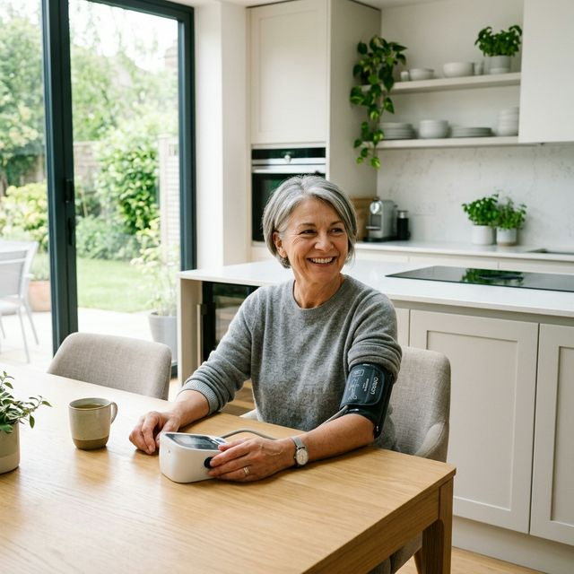
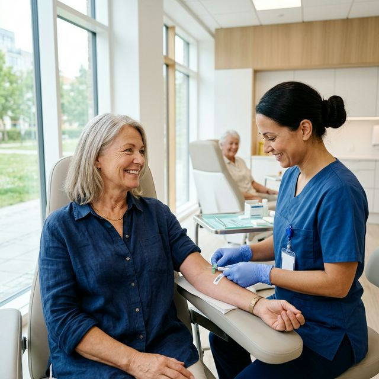
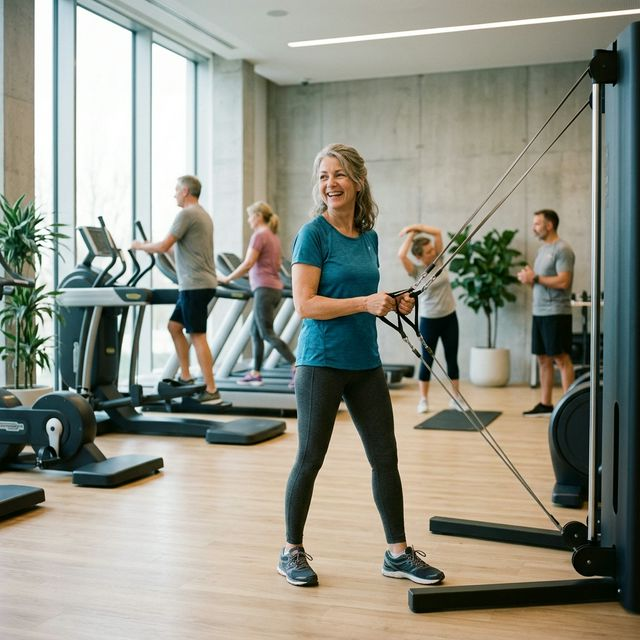

Chcesz zacząć ćwiczyć. I nagle słyszysz: najpierw idź do lekarza, zrób wszystkie badania, sprawdź serce. Brzmiałoby rozsądnie, gdyby nie fakt, że dla większości zdrowych dorosłych po pięćdziesiątce strach przed badaniami jest większy niż rzeczywiste ryzyko. Ten artykuł pokazuje, jakie badania przed treningiem po 50-tce naprawdę warto zrobić, czego zwykle nie musisz i dlaczego czekanie na „idealne” wyniki bywa najgorszym możliwym pomysłem.
Zacznijmy od prawdy, która może Cię zaskoczyć
Większość ludzi po pięćdziesiątce zakłada, że przed pierwszą siłownią musi przejść komplet badań jak przed zawodami olimpijskimi. EKG wysiłkowe, echo serca, pełna morfologia, lipidogram, hormon tarczycy i jeszcze kilka rzeczy, bo przecież wiek. Tymczasem światowe organizacje medyczne mówią co innego.
Amerykańskie Kolegium Medycyny Sportowej w swoich zaktualizowanych wytycznych zmieniło podejście do badań przedstartowych. Zdrowe osoby, nawet po 50-tce, które nie mają objawów chorób sercowo-naczyniowych i chcą zacząć umiarkowany trening, mogą zacząć ćwiczyć bez obowiązkowego badania lekarskiego. Kluczowy jest wywiad zdrowotny i brak objawów, nie wiek sam w sobie. Jeśli dopiero układasz plan startu, zobacz też jak zacząć na siłowni po 50-tce.
To nie znaczy, że badania są zbędne. Znaczy to tylko tyle, że podejście „zajmij się wszystkim, zanim ruszysz” jest najczęściej błędne. Dla większości osób właściwa kolejność wygląda tak: zacznij umiarkowanie i równocześnie zrób podstawowe badania.
Siedzenie w domu i czekanie na wyniki badań to nie ostrożność. To bardzo często strategia mózgu, który szuka wymówki.
Co sprawdzić obowiązkowo przed treningiem po 50-tce
1. Ciśnienie tętnicze
To najważniejsze i jednocześnie jedno z najczęściej pomijanych badań. Nadciśnienie tętnicze nie boli, dlatego wiele osób nawet nie wie, że je ma. Intensywniejszy wysiłek może gwałtownie podnieść ciśnienie u osoby bez przygotowania kondycyjnego, a przy nierozpoznanym nadciśnieniu staje się to realnym ryzykiem.

W praktyce warto celować w wynik poniżej 130/80 mmHg. Zakres 130-139 / 80-89 oznacza, że wysiłek zwykle jest możliwy, ale z ostrożnością. Wynik powyżej 180/110 to sygnał: stop, najpierw konsultacja lekarska.
Najlepiej nie opierać się na jednym pomiarze w gabinecie. Tak zwane nadciśnienie białego fartucha istnieje naprawdę. Dobry ciśnieniomierz naramienny i pomiar przez 7 dni rano przed śniadaniem dają znacznie lepszy obraz niż pojedynczy wynik.
2. Morfologia krwi i lipidogram
To dwa badania, które dają dużo informacji przy małym koszcie i minimalnym wysiłku. Morfologia może pokazać anemię, stan zapalny albo ogólny problem z regeneracją. Jeśli po treningu czujesz się skrajnie wyczerpany, czasem problem nie leży w samym treningu, tylko właśnie tutaj.

Lipidogram, czyli cholesterol całkowity, LDL, HDL i trójglicerydy, to podstawowy wskaźnik zdrowia układu sercowo-naczyniowego. Warto wiedzieć, gdzie stoisz, zanim zaczniesz regularnie obciążać organizm treningiem.
Przy okazji dobrze jest dorzucić glukozę na czczo. Nierozpoznana cukrzyca typu 2 po 50-tce wcale nie należy do rzadkości, a potrafi dawać objawy mylone z „brakiem formy”.
3. EKG spoczynkowe
Zwykłe EKG w spoczynku jest tanie, szybkie i bezbolesne. Nie wykrywa wszystkiego, ale może pokazać zaburzenia rytmu serca, nieprawidłowości przewodzenia albo ślady przebytego problemu, o którym pacjent nie wiedział.
Jeśli jesteś po 50-tce i nie miałeś EKG od kilku lat, dobrze mieć aktualny zapis jako punkt odniesienia na przyszłość. To rozsądne minimum, a nie przesadna ostrożność.
Dane z badań epidemiologicznych pokazują, że podstawowe ryzyko ostrego incydentu sercowego u zdrowej osoby bez objawów jest niskie, a większe ryzyko dotyczy właśnie osób regularnie nieaktywnych. Innymi słowy: brak ruchu zwykle szkodzi bardziej niż rozsądnie wprowadzony ruch.
4. Poziom witaminy D
To badanie jest niedoceniane, a po pięćdziesiątce często naprawdę ważne. Niedobory witaminy D są częste i potrafią objawiać się przewlekłym zmęczeniem, bólami mięśni i gorszą regeneracją. Ktoś zaczyna ćwiczyć, po każdej sesji czuje się rozbity i dochodzi do wniosku, że trening mu nie służy. Tymczasem problem nie leży na siłowni, tylko w laboratorium.
5. TSH, czyli hormon tarczycy
Niedoczynność tarczycy to jedna z najczęściej nierozpoznanych chorób po 50-tce, szczególnie u kobiet. Jej objawy, takie jak chroniczne zmęczenie, przyrost masy ciała, brak energii czy gorszy nastrój, bywają mylone z naturalnym starzeniem albo brakiem motywacji.
Jedno badanie TSH nie odpowiada na wszystko, ale bardzo często mówi, czy tarczyca działa prawidłowo i czy nie warto pójść krok dalej. Jeśli poza zdrowiem chcesz równolegle ogarnąć jedzenie, przyda Ci się też materiał o diecie po 50-tce i trwałych nawykach.
Co nie jest obowiązkowe dla większości osób
EKG wysiłkowe, czyli próba wysiłkowa
Tu pojawia się jeden z większych mitów: że każdy po 50-tce musi zrobić próbę wysiłkową przed trenowaniem. Nie musi.

Aktualne zalecenia nie rekomendują rutynowej próby wysiłkowej u bezobjawowych dorosłych, którzy chcą podjąć umiarkowany wysiłek fizyczny. Masowe badania przesiewowe u osób bez objawów mają niską wartość predykcyjną i mogą generować fałszywie dodatnie wyniki. A to często prowadzi do niepotrzebnych dalszych badań i skutecznie odstrasza od aktywności.
Próba wysiłkowa ma sens wtedy, gdy:
- masz chorobę wieńcową lub byłeś leczony z jej powodu,
- masz cukrzycę typu 2 z powikłaniami,
- pojawiają się objawy podczas wysiłku, takie jak ból w klatce, zawroty głowy czy duszność,
- chcesz trenować intensywnie, a nie po prostu zacząć się ruszać.
Echo serca
Echo serca jest wartościowym badaniem obrazowym, ale nie jako rutynowy screening dla każdego po pięćdziesiątce. Ma sens przy szmerach w sercu, objawach niewydolności serca, nieprawidłowym EKG albo konkretnym podejrzeniu klinicznym.
Panel hormonalny, kortyzol i markery nowotworowe
To często element drogich pakietów prywatnych laboratoriów. Brzmi poważnie, wygląda profesjonalnie, ale bez konkretnych objawów klinicznych zwykle nie wnosi nic istotnego do decyzji o rozpoczęciu umiarkowanego treningu. Nie są to standardowe badania kwalifikujące do ćwiczeń.
Obalamy mity, jeden po drugim
Mit: każdy po 50-tce musi robić próbę wysiłkową przed treningiem
Fakt: nie musi. U bezobjawowych dorosłych planujących umiarkowany wysiłek nie jest to rutynowo zalecane.
Mit: jeśli wyniki badań nie są idealne, nie można ćwiczyć
Fakt: lekko podwyższony cholesterol, ciśnienie 135/85 czy nadwaga nie są automatycznym zakazem treningu. Bardzo często to właśnie regularny ruch jest częścią rozwiązania.
Mit: ból w klatce podczas ćwiczenia jest normalny przy wieku
Fakt: nie. Ból lub ucisk w klatce piersiowej podczas wysiłku to sygnał alarmowy i wymaga konsultacji.
Mit: poczekam na wyniki badań, potem zacznę ćwiczyć
Fakt: czekanie na „idealny moment” to jedna z najdroższych strategii zdrowotnych. Jeśli nie masz objawów alarmowych, możesz zacząć umiarkowanie i badać się równocześnie.
Sygnały alarmowe. Kiedy stop i natychmiastowa konsultacja
Są objawy, które absolutnie wymagają konsultacji lekarskiej przed jakimkolwiek wysiłkiem. Nie jako strategia ostrożności, tylko jako medyczna konieczność.
- Ból, ucisk lub pieczenie w klatce piersiowej podczas wysiłku lub w spoczynku.
- Zawroty głowy, omdlenie albo stan bliski omdleniu podczas ćwiczeń.
- Krótki oddech nieproporcjonalny do wysiłku, na przykład przy spokojnym marszu.
- Kołatania serca lub nieregularny rytm serca podczas lub po wysiłku.
- Silny ból głowy podczas ćwiczenia.
- Obrzęki kostek i nóg bez oczywistej przyczyny.
- Ciśnienie powyżej 180/110 mmHg mierzone spokojnie, kilkukrotnie.
To nie są powody do paniki. To są powody do wizyty u lekarza. Jeden znaleziony problem nie przekreśla treningu. Wyjaśnia tylko, jak podejść do niego bezpiecznie.
Jak rozmawiać z lekarzem konkretnie
Wiele osób wychodzi z gabinetu ze zdaniem: „nie polecam wysiłku”, bez dalszego uzasadnienia. I na tym kończy temat. Warto poprowadzić tę rozmowę bardziej konkretnie.
Pytania, które warto zadać lekarzowi:
- Czy mam jakieś konkretne przeciwwskazania do umiarkowanego treningu?
- Jeśli tak, to jakie dokładnie objawy lub wyniki są problemem?
- Od jakiej intensywności mogę bezpiecznie zacząć?
- Jakie badania naprawdę są potrzebne, a jakie są tylko opcjonalne?
- Jak ćwiczenie wpłynie na moje leki, jeśli jakieś biorę?
Podsumowanie. Prosty plan działania
Dla osoby po 50-tce, która chce zacząć trenować i jest ogólnie zdrowa, praktyczny plan wygląda tak:
- Zmierz ciśnienie, najlepiej jako tygodniową średnią w domu.
- Zrób podstawowe badania krwi: morfologia, lipidogram, glukoza, TSH i witamina D.
- Wykonaj EKG spoczynkowe, jeśli dawno go nie było.
- Jeśli nie masz objawów alarmowych, zacznij umiarkowany trening równocześnie z oczekiwaniem na wyniki.
- Jeśli masz objawy z listy alarmowej, najpierw lekarz, potem siłownia.
- Jeśli wyniki wychodzą poza normę, pytaj o konkretne ograniczenia, a nie o ogólny zakaz ruchu.
W praktyce badania przed treningiem po 50-tce nie powinny być przeszkodą. Powinny być częścią mądrego startu. Zrobić je warto. Ale czekać na nie miesiącami, zanim w ogóle się ruszysz, warto tylko wtedy, gdy naprawdę są ku temu powody medyczne. A dla większości zdrowych osób po pięćdziesiątce takich powodów po prostu nie ma. Jeśli największym problemem jest regularność, przeczytaj też jak zbudować motywację do ćwiczeń po 50-tce.
Źródła
- [1] ACSM's Guidelines for Exercise Testing and Prescription, 11th Edition (2022).
- [2] Thompson PD, Arena R, Riebe D, Pescatello LS. ACSM's New Preparticipation Health Screening Recommendations.
- [3] Thompson PD, Franklin BA, Balady GJ et al. Exercise and Acute Cardiovascular Events: Placing the Risks Into Perspective.
- [4] Riebe D et al. Updating ACSM's Recommendations for Exercise Preparticipation Health Screening.
- [5] Framingham Heart Study, dane cytowane w publikacjach AHA i Circulation dotyczących ryzyka sercowo-naczyniowego u dorosłych 50+.
- [6] American Heart Association / ACSM. Recommendations for Cardiovascular Screening at Health/Fitness Facilities.
- [7] Holick MF et al. Evaluation, Treatment, and Prevention of Vitamin D Deficiency.